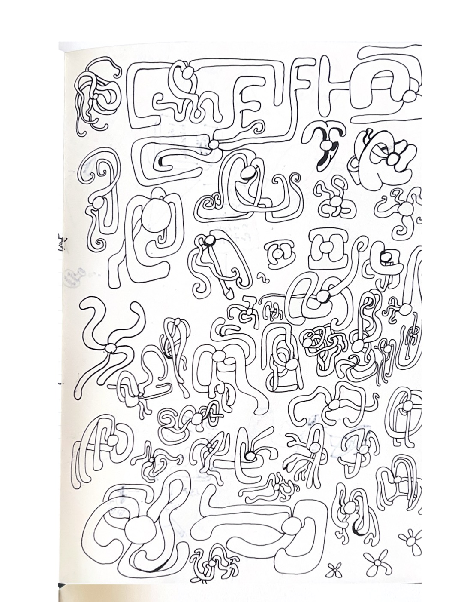

click the paper for a new squig
I've been drawing squigs in notebooks for years — they started as a doodle habit and gradually developed their own internal grammar: bodies, arms, curls, hooks, bulbs, lines that weave over and under each other. The generator is a procedural expansion of that same vocabulary. Noise drives the path curvature, a spatial hash lets arms sense and follow each other, and crossing detection handles the over/under. The controls map directly to decisions that happen intuitively with a pen.

Sketchbook, ongoing